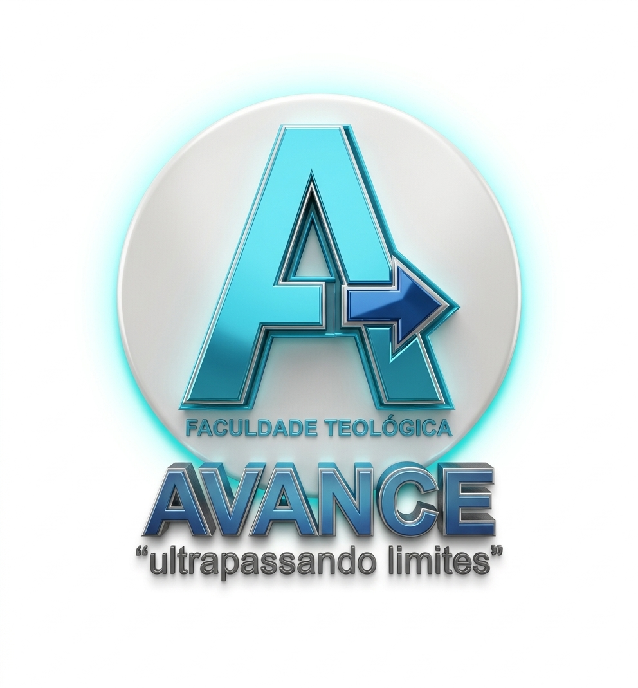

Catálogo Acadêmico
1. Bibliologia
A Origem e a Autoridade das Escrituras
2. Teologia Sistemática
O Estudo das Doutrinas Cristãs
3. Hermenêutica
Princípios de Interpretação Bíblica
4. Homilética
A Arte da Pregação e Comunicação
5. História do Cristianismo
Dos Apóstolos à Reforma
6. Bioética Cristã
Dilemas Contemporâneos sob a Ótica Bíblica
7. Gestão de Conflitos
A Engenharia do Perdão
8. Heresiologia
Defesa da Fé e Combate aos Falsos Ensinos
9. Antigo Testamento
Contexto, Alianças e a Revelação Progressiva
10. Ontologia Bíblica
A Natureza do Ser e a Identidade em Cristo